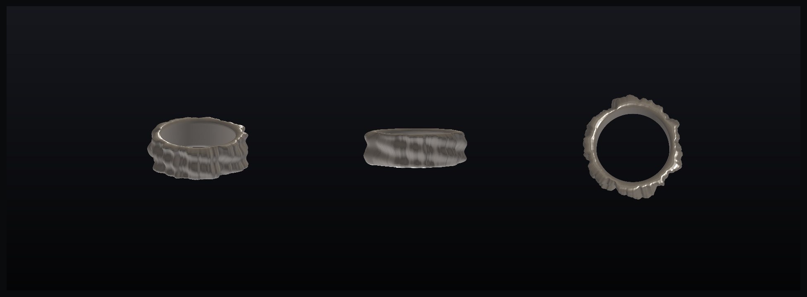
夏娃 Eve · 本能
原始、大地、肉身。多正弦叠加的有机锻面，像手捏与熔融的银块。
内径17.3mm·港13宽7.4壁2.2银≈9.9g可铸✓
不画草图，写代码。每一枚都是一段几何/数据生成的银戒指， 导出即水密实体，可直接 3D 打印可铸树脂、单件浇铸成银。

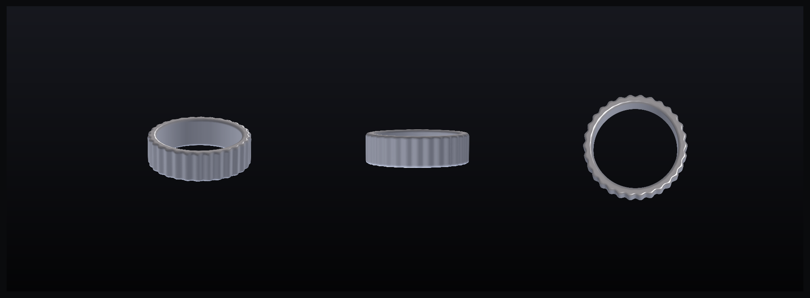
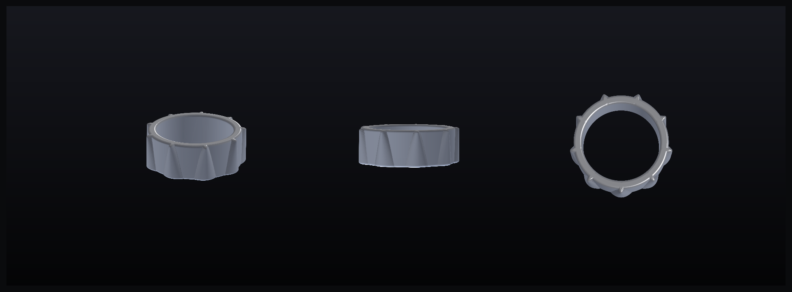
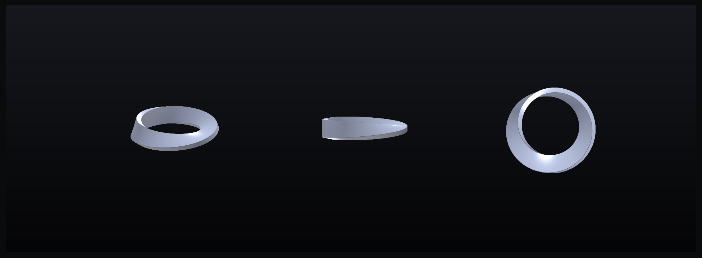
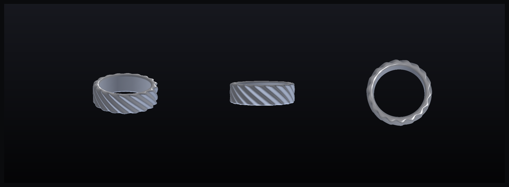
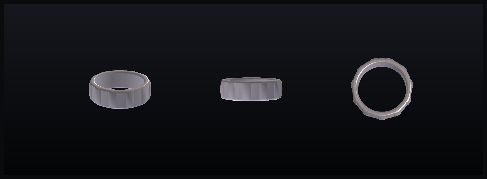
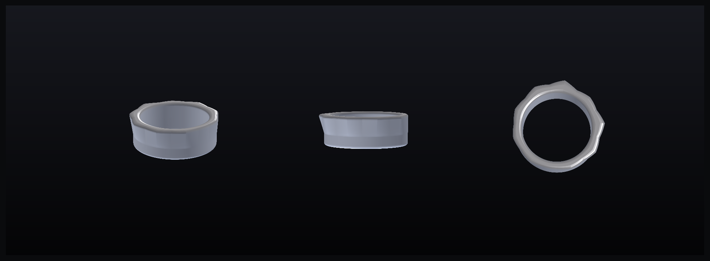
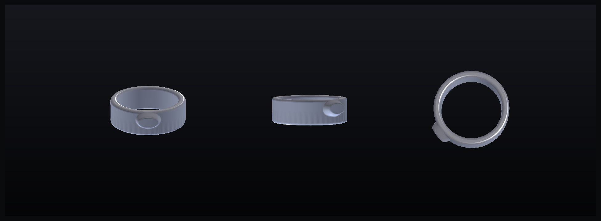
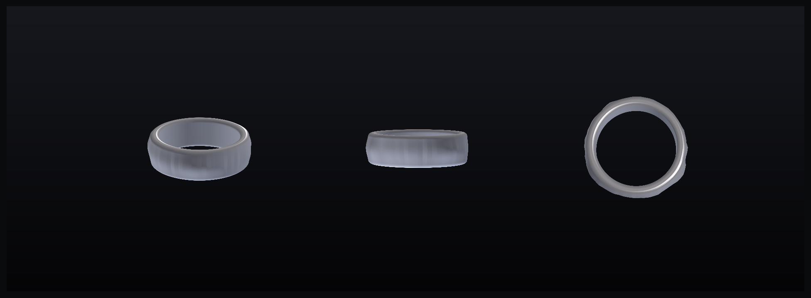
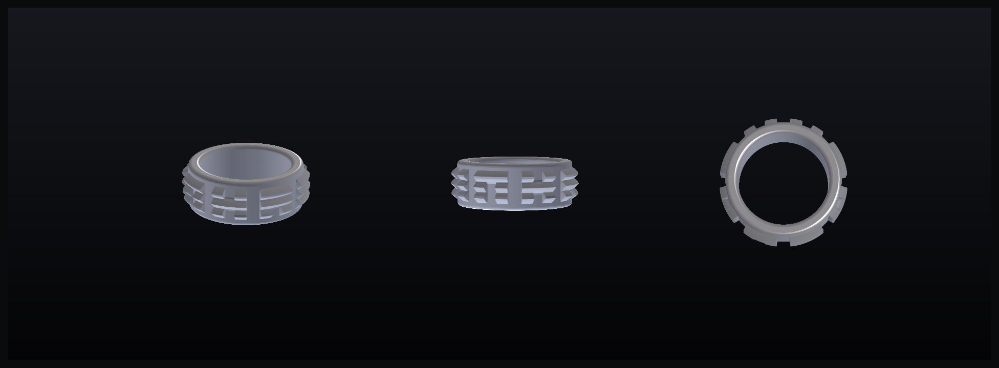
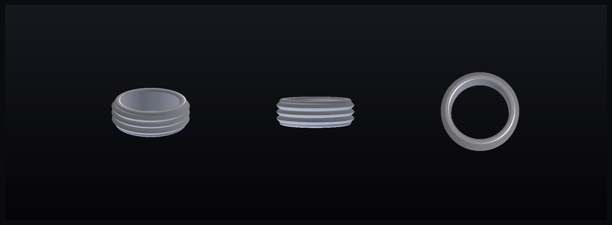
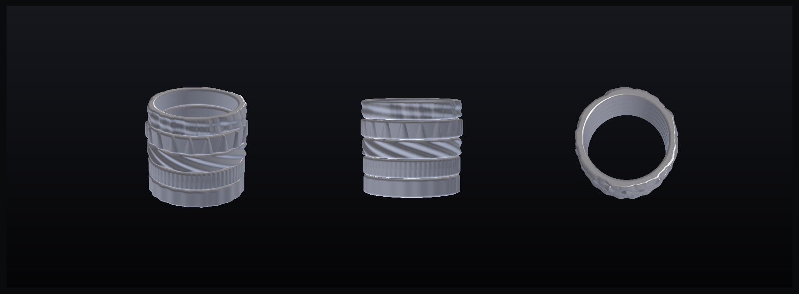
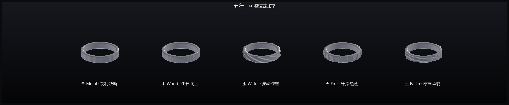
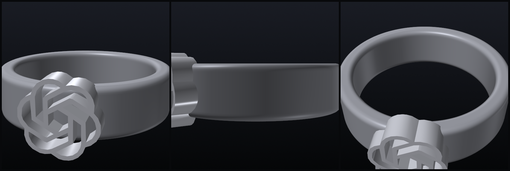
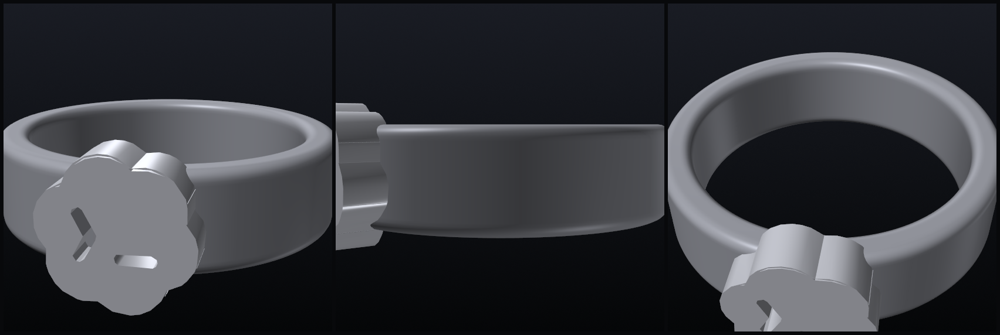
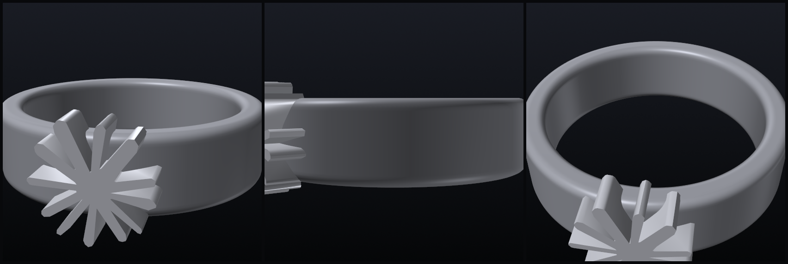
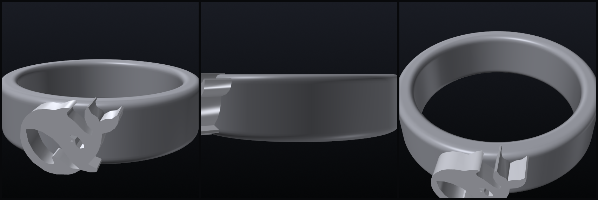
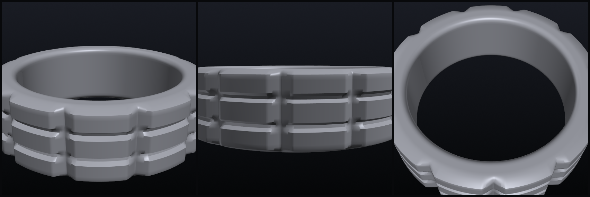
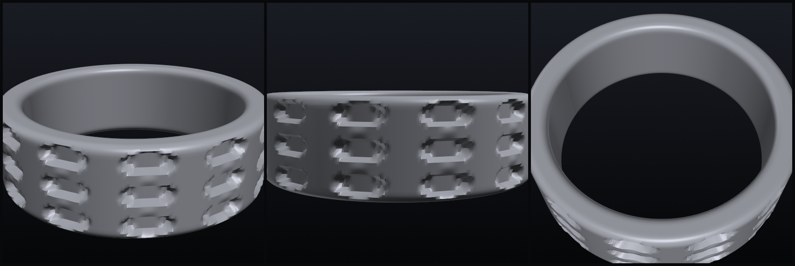
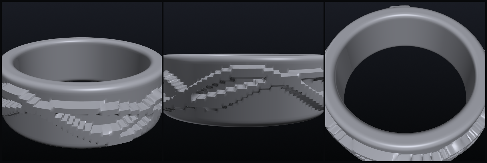
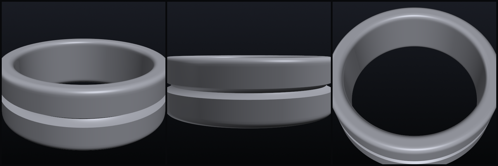
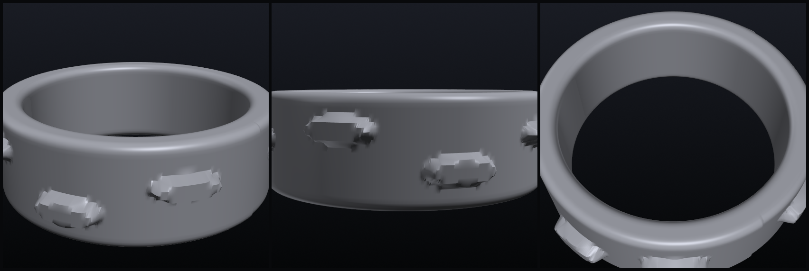
写参数化脚本生成戒指，导出水密 STL。改一个数字即换尺寸/换款。
用可铸树脂(含蜡)在普通光固化打印机上打出模型，即"机器雕的蜡"。
包石膏→烧失→浇 925 银→开壳。优先外包代铸，便宜且安全。
打磨、抛光，或氧化做旧。一枚戴得上手的银戒指完成。
现场说一个词、一个日子、一处坐标，我当场把它生成成模型给你看； 满意就下单，回去打印、单件直铸成银，邮寄或二次交付。 手雕做不到、普通 CAD 懒得做——这是代码生形独有的能力。
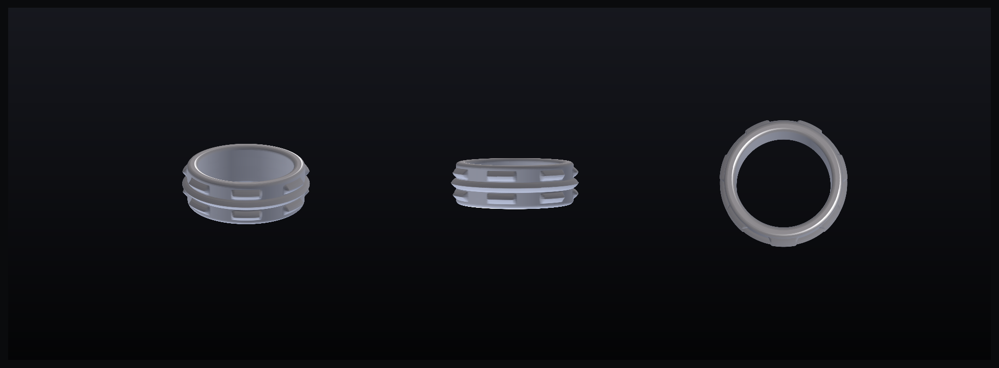
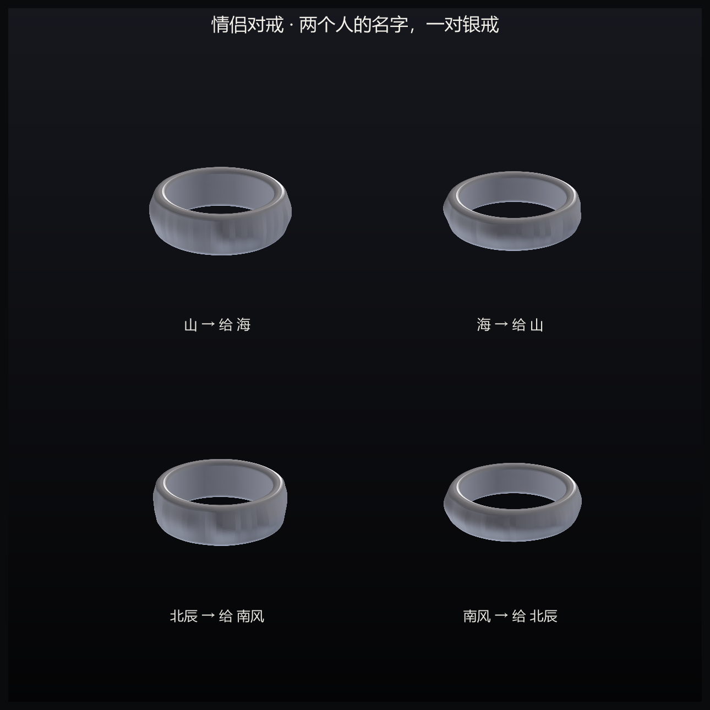
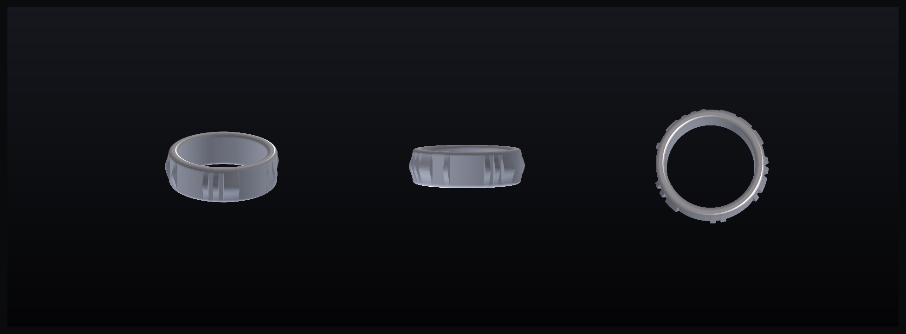
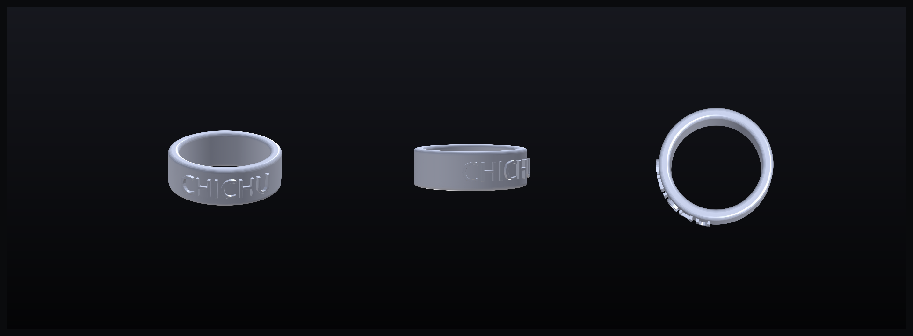